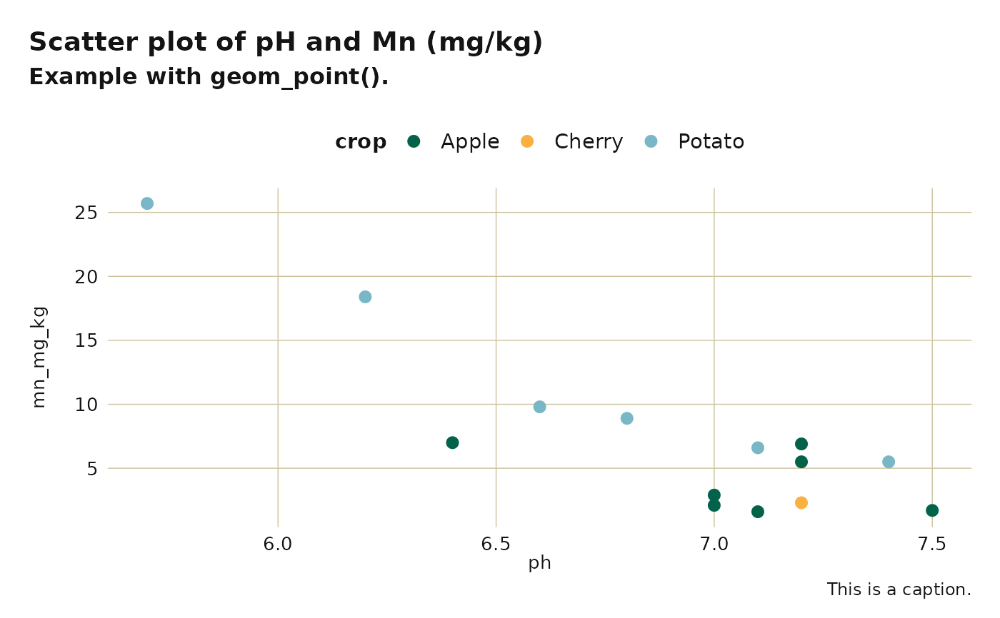

Adapted from
glitr::si_style().
All changed defaults from this function can be overriden by another
call to ggplot2::theme() with the desired changes.
Usage
washi_theme(
font_title = "Lato Black",
color_title = "#151414",
font_subtitle = "Lato Black",
color_subtitle = "#151414",
font_caption = "Poppins",
color_caption = "#151414",
font_plot = "Poppins",
color_plot_text = "#151414",
text_scale = 1,
legend_position = "top",
facet_space = 2,
color_gridline = washi_pal[["standard"]][["tan"]],
gridline_y = TRUE,
gridline_x = TRUE,
...
)Arguments
- font_title
Font family for title. Defaults to "Lato Black".
- color_title
Font color for title. Defaults to almost black.
- font_subtitle
Font family for subtitle. Defaults to "Lato Black".
- color_subtitle
Font color for title. Defaults to almost black.
- font_caption
Font family for caption. Defaults to "Poppins".
- color_caption
Font color for title. Defaults to almost black.
- font_plot
Font family for plot text. Defaults to "Poppins".
- color_plot_text
Font color for title. Defaults to almost black.
- text_scale
Scalar that will grow/shrink all text defined within.
- legend_position
Position of legend ("none", "left", "right", "bottom", "top", or two-element numeric vector). Defaults to "top".
- facet_space
Controls how far apart facets are from each other.
- color_gridline
Gridline color. Defaults to WaSHI tan.
- gridline_y
Boolean indicating whether major gridlines are displayed for the y axis. Default is TRUE.
- gridline_x
Boolean indicating whether major gridlines are displayed for the x axis. Default is TRUE.
- ...
Pass any parameters from theme that are not already defined within.
See also
Other ggplot2 functions:
washi_scale()
Examples
library(extrafont)
#> Registering fonts with R
library(ggplot2)
# Single geom_point plot
example_data_wide |>
subset(crop %in% c("Apple", "Cherry", "Potato")) |>
ggplot(aes(x = pH, y = EC_mmhos.cm, color = crop)) +
labs(
title = "washi_theme() + washi_scale()",
subtitle = "This is a subtitle.",
caption = "This is a caption."
) +
geom_point(size = 2.5) +
washi_theme() +
washi_scale()

# Facetted geom_bar plot
example_data_long |>
subset(measurement %in% c("totalC_%", "poxC_mg.kg") &
!texture == "Loamy Sand") |>
ggplot(aes(x = value, fill = texture, color = texture)) +
labs(
title = "washi_theme() + washi_scale()",
subtitle = "Example of facet_grid()."
) +
geom_density(alpha = 0.4) +
facet_wrap(. ~ measurement, scales = "free") +
washi_theme(legend_position = "bottom") +
washi_scale() +
xlab(NULL) +
guides(col = guide_legend(nrow = 2, byrow = TRUE))